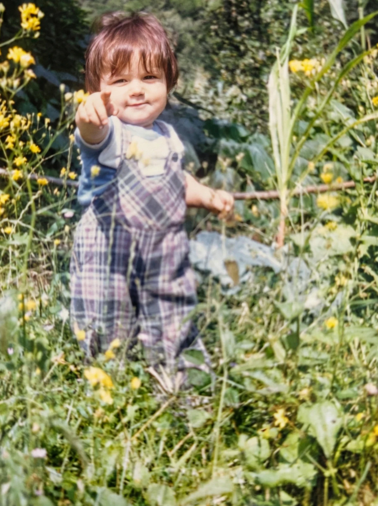
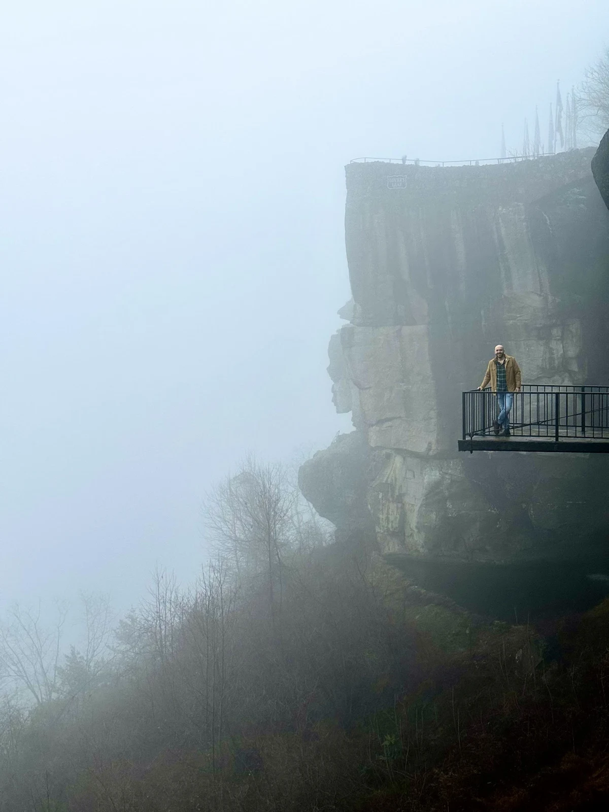
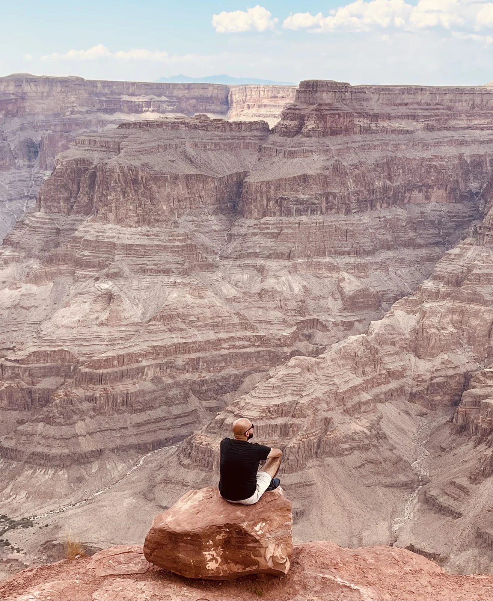

Digital platforms
Tools, workflows, product behavior, access patterns, and the hidden logic behind platforms.
Technology. Language. A human perspective.
Making the complex feel human.
I explore the connections between technology, language, and systems — and how complex tools become clear, useful, and human.




Software ✳ AI & Machine Learning ✳ Language ✳ Systems
01 / Perspective
Tools matter.
What we do with them
matters more.
My work has taken me through global tech platforms, digital tools, language systems, documentation, and localization. The common thread is clarity: understanding how things work, and making them work better for people.
Explore my background ↗02 / Areas of interest
Tools, workflows, product behavior, access patterns, and the hidden logic behind platforms.
Translation, localization, terminology, meaning, and communication across cultures.
Automation, machine learning, and how AI changes work, learning, and communication.
Guides, training content, and documentation that make complicated ideas usable.
03 / Beyond the screen
A different kind of systems thinking. Listening, timing, and finding the next possibility — live, on stage.
04 / In conversation
A guest speaker conversation, available to watch or listen.
Watch & listen ↗Off the clock
Improv, storytelling, travel, football, and the fictional worlds of Marvel & DC. Places, scenes, and small details worth remembering.
The other side ↗Keep the conversation going
Technology, language, creative work — or something in between.